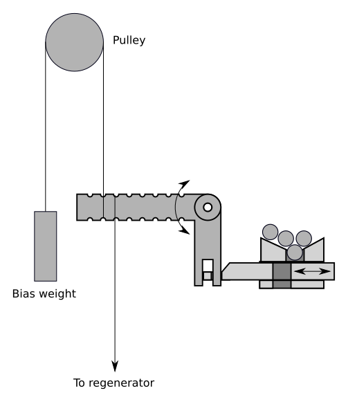

February 2022
This document does not describe how to make the computer. This is a schematic description of the machine, and will require a great deal of engineering work to produce working drawings. Nonetheless, the majority of the machine has been built at the time of writing, as illustrated in figure 1.
Data in the computer are represented by 6.35mm or 1/4 inch steel ball bearings. Data are transmitted by the ball bearings falling under gravity. Presence of a ball bearing in a particular position can be considered a logical ‘1’ and absence a logical ‘0’.
Figure 2 shows the outline datapath of the computer. Data cannot flow only in one direction, so information is also transmitted upwards from the mid regenerator and base regenerator to the memory injector via cable, and from the address sender to the address decoder by rigid steel rod.
The machine can be constructed from laser-cut acrylic, fused-deposition PLA 3D printed parts, and commonly available structural components such as OpenBeam and perforated steel angle section.
The main components are:
A ball bearing hopper and injector unit
16-word 8-bit random access memory unit
16-address memory address decoder
Mid-unit regenerator
Diverter unit, used to route ball bearings to a particular path through the machine
Two adder-subtractor units
Memory address sender
Base regenerator
Instruction decoder and sequencer unit
This stores a stock of ball bearings and can send a ball bearing down each of eight bit channels. A ball bearing can be requested on each of the eight bit channels by lifting a lever to the rear of the hopper or by pushing a button on the front of the machine. Each of the eight rear levers are connected by lightweight cable or string to both of the regenerator units below. The front panel buttons are intended for manual programming of the memory prior to automatic operation.
r0.5 
Figure [fig:injector] shows the construction. A crank arm connects to both of the regenerators and a bias weight, and moves a sliding part with a gap forward and backward. When the sliding part moves to the right, the gap accepts a ball bearing from the hopper, and on moving left, the ball is released. It does not matter whether the ‘rest’ position for the slider is left or right; one cycle (left, right) or (right, left) will drop one ball bearing. Eight of these crank and slider assemblies provide the injector for the 8-bit machine.
An additional mechanical input can be used to inject a ball bearing into all eight channels at one time.
A memory unit can hold an 8x8 grid of ball bearings. Figure 3 shows the principle of operation using a 4-bit-wide memory unit. Presence of a ball bearing in a cell represents a logical ‘1’ and absence represents a logical ‘0’. Memory is accessed by horizontal rows. Each row consists of two horizontal acrylic bars. One bar performs movement between the pass-through channel and storage channel (the “move bar”) and the other bar blocks the pass-through channel (the “block bar”). With no channel selected, in the memory’s default state, ball bearings will pass down the pass-through channel directly through the memory without affecting any part of it.
An additional mechanism called ‘memory reset’ moves all block and move bars, for all addresses, into the right position.
To read data from memory, the block bar for a particular channel is moved left. One block bar will be selected by the memory address decoder, to be discussed in a later section. When moving left, the block bar automatically drags the move bar with it, so the ball bearing (if present) for each bit is moved to the pass-through channel. On retraction of the block bar by the memory address decoder, the ball bearing is free to fall into the pass-through channel. The move bar for that row is not retacted by the movement of the block bar. Once enough time has passed for the ball bearing to fall, the ‘memory reset’ mechanism is deployed to move all block and move bars to the right position. The pattern of ball bearings stored in memory is now ejected from the memory in the respective bit columns.
Reading data is destructive; external mechanisms must perform a data write of the same data read out if the data is to remain in memory.
To write data to a particular address, the block bar for a particular channel is moved left, and as per the reading operation, the move bar for the same address is dragged left with it. Ball bearings can now be injected into the memory in the pattern of data requested by the injector unit. Any ball bearings entering memory will be stopped at the block bar. Memory reset is now performed for all addresses, pushing both the block bar and move bar at the same time, pushing the captured data into the storage position. The memory address decoder can now be de-asserted.
Figure 4 shows an 8x8 memory unit constructed from lasercut 3mm acrylic sheet.
The memory address decoder takes a set of 4 address bits and allows movement of exactly one memory line based on the combination of those four bits.
Figure 5 shows the schematic representation of the address decoder. Each memory address line has tension constantly applied to it pulling it to the left. The holdoff bar can push all rods to the right simultaneously; this lifts all rods clear of the vertical enumerator rods so the vertical rods are free to move.
When the holdoff bar is released, this allows all memory word rods to move left. All but one of the word rods will be blocked by the profile of the vertical rods; in figure 3, all address inputs are at ‘0’, so memory address 0 is selected; only horizontal rod 0 can move left by a significant distance. This rod moves the block bar of the memory unit.
If, before releasing the holdoff bar, the rightmost vertical bar is moved upwards by a short distance, then word line 0 will be blocked at word line 1 will be free to move left, hence selecting memory address 1. If the second rightmost vertical bar is moved instead, address 2 will be selected; if both the two rightmost bars are both moved up, then address 3 is selected, and so on; all combinations of 4 bits select exactly one horizontal memory bar.
There is a larger gap between memory address 7 and 8 than any other addresses; this accounts for the fact that the memory modules will likely be 8-word units, and will require a small gap between modules.
The physical address decoder unit allows for 5 decoder rods, and also allows two 4-to-16 decoder units to be stacked vertically; this allows future expansion up to 32 words of memory.
In figure 6, we can see the holdoff bar, which has the label ‘4-to-16 decoder’ printed on it, and adapters at the top of each vertical rod allowing each to be lifted at once.
The mid-position regenerator captures data read from memory and provides a signal upwards in the machine to the injector. If a ball bearing enters the machine in a particular bit position, it will provide mechanical connection between the drive arm and sensor arm. When the drive arm is moved clockwise while a ball bearing is present in the bearing gap, a mechanical signal will be sent to the injector to inject another ball bearing in the same bit position. Since the injector feeds into memory, this can be used to re-write the same bit pattern into memory after reading. This rectifies the destructive read property of the memory.
The regenerator can also release the captured ball bearing to lower parts of the machine. Hence, data is copied: back to memory, and available to lower parts of the machine.
The drive arm is shown in figure 7 in the neutral position. In this position, ball bearings falling into the regenerator will fall into the gap between the sensor arm and drive arm. The sensor arm is blocked from rotating anticlockwise by the sensor arm rest. The drive arm can be rotated clockwise to operate the regenerator. If a ball bearing is present in the gap between drive arm and sensor arm, then the sensor arm is driven clockwise. A block (Drive limiting block) prevents the drive arm moving so far as to move the sensor arm if no ball bearing is present.
A cable attached to the sensor arm, biased by a weight below the regenerator, provides the signal to the hopper injector unit at the top of the machine to inject a new ball bearing in this bit position. Rotating the drive arm anticlockwise from the neutral position allows the ball bearing (if present) to fall through a gap in the bottom of the machine and on to further devices.
The diverter unit diverts the set of ball bearings between one of five potential paths:
The update channel of the accumulator
The read channel of the accumulator
The update channel of the program counter
The read channel of the accumulator
A split path between the memory address sender and instruction decoder.
The diverter consists of four rotating flaps which can be laid flat across the top of the diverter to allow a ball bearing to pass, or rotated to cause any passing ball bearings to fall through into the channel below. If all four flaps are lowered, ball bearings pass off the end of the diverter where they are captured. In this case, the low 5 bits are sent to the memory address sender and the high 3 bits are sent to the instruction decoder.
r0.5
Adder-subtractor units act as registers and either binary adders or binary subtractors. These use a toggle design used by the Digi-Comp II (1965) and Turing Tumble (2017). A ball bearing falling into a particular bit channel flips the position of a toggle and exits either left or right depending on its previous position. If a bit is configured to act as an adder, a ball bearing falling onto a toggle previosuly set to ‘0’ will set it to ‘1’ and be discarded. If the bit was previously set to ‘1’, the ball bearing falling onto it will set it to ‘0’ and continue into the next bit, acting as a carry.
Figure [fig:subtractor-simple] shows two toggles. The initial state of each toggle is shown below. A ball bearing falling into the rightmost (least significant) toggle causes it to flip to 0 and causes carry, because the ball bearing continues to the next toggle rather than being ejected from the adder. The next highest bit, starting at 0, flips to 1 and the ball bearing is ejected to the right. Hence, the initial state 01b becomes 10b.
Depending on the mapping by ‘left’ and ‘right’ to ‘0’ and ‘1’, and the ‘reset’ position, similar structures can be considered adders or subtractors. Figure [fig:subtractor-simple] shows cells in adder configuration. If the mapping is reversed so that ‘1’ is considered left and ‘0’ right, then a ball bearing falling into the top of a bit in state 1 (left) will not cause borrow from the next most significant bit; if the bit is in state 0 (right) then the ball bearing flips that to 1 before continuing to subtract from the next most significant bit.
The adder-subtractor units in this device are augmented by a read channel which consists of toggles connected on the same axle to the main toggles. In the read channel, the ball bearing is deflected by the position of the toggle but does not affect it, so no update is performed. In this way, the value of the register can be read out without updating.
Two adder-subtractor units are used, both with read-out channels. One is the accumulator, which acts in ‘subtraction’ mode; any data falling into the ‘update’ channel of the accumulator subtracts its value from the accumulator’s stored value. This accounts for the SUB (subtractor from accumulator) and MVN (move negative) instructions, the MVN value being equivalent to subtraction having reset the accumulator to zero before entering data.
The second adder-subtractor unit is the program counter, which works in addition mode. Any data falling into the update channel of the program counter adds its value to the program counter. This accounts for the JMP (jump absolute) and JRP (jump relative) instructions, with the JMP instruction beting equivalent to addition having set the program counter to zero before entering data.
To read data from either register, an ‘all bits’ injector command is issued, causing the injector to inject ball bearings into each data channel. These ball bearings pass through the memory without affecting it, pass through the mid-position regenerator without copying, and fall into the read channel of that respective register. The ball bearings passing through a read channel in which the relevant bit is set to ‘0’ are discarded. The ball bearings passing through a read channel in which the relevant bit is set to ‘1’ are passed out through the side of the register for collection by another device for interpretation.
This functions in the same manner as the mid-position regenerator, but in this case it is only used to accept output from the accumulator’s read channel. Ball bearings are passed down in a pattern representing the bits in which the accumulator is set to ‘1’. The base regenerator activates for all instructions, but no data will be present in the base regenerator unless the ‘memory read’ path was chosen by the diverter unit, so no signals are sent by the base regenerator unless the ‘STO’ instruction is being performed.
This unit captures ball bearings falling from either the end of the diverter unit (to capture the address portion of a decoded instruction) or the read-out channel of the program counter (to capture the value of the program counter, to fetch the relevant instruction from memory).
Ball bearings are held in the address sender unit which will then block rods which connect to the address decoder. Where a ball bearing is present in the address sender, the rod cannot fall, hence the relevant address line in the address decoder remains high. Where no ball bearing is present, the rod can fall.
A signal line is attached to the release/hold lever which will capture ball bearings rolling into the machine or release them. Released ball bearings are discarded into the gutter.
The CMP-Skip unit performs the CMP operation. When the CMP instruction is selected, a single ball bearing is injected into column 7 of the accumulator read plane and the machine simultaneously diverts the output from bit 7 of the accumulator’s read plane into the lower part of the CMP-Skip unit. If the ball bearing is received into the CMP-Skip unit, that means the accumulator has bit 7 set, indicating the accumulator value is negative (according to two’s complement arithmetic) and the CMP-Skip unit will use this to inject a single bearing into the program counter’s update layer, skipping one instruction. Since the output of the accumulator is lower than the input to the program counter, the captured bit 7 bearing must activate a lever which triggers the program counter increment signal.
The sequencer is a large camshaft which sequences all the actions in the machine. It includes the instruction decoder.
As per figure 12 two types of cam are used; generic cams whose follower moves unconditionally with the cam, providing the weight attached to the end is sufficient to override the load placed on it, and instruction-dependent cams. Instruction-dependent cams are blocked from moving downwards unless the instruction decoder allows that motion. There are eight instruction-dependent cams, one for each instruction, and exactly one is allowed to move a significant distance during each instruction cycle. The instruction decoder uses a very similar structure to that of the memory address decoder, as in figure 5, but with three inputs and eight output slots. The inputs to the instruction decoder are the three ball bearings which form the most significant three bits of the fetched instruction.
Each instruction-dependent cam is also lifted very slightly above the instruction decoder while the instruction is being set up, freeing the instruction decoder’s decoder rods so they can move freely. This lifting is performed by the cam.
Ball bearings must be recirculated from the gutter to the memory injector/hopper unit, PC increment unit, and CMP-Skip unit. At the time of writing, this must be done manually by an operator. In future operation, this can be provided automatically; this is seen as a smaller problem than the general operation of the computer and as such will be completed at a later date.
DEC-RODHOLD: Holds the address decoder’s address rods up.
DEC-LINEHOLD: Holds the address decoder’s line outputs right. Must be asserted when changing DEC-RODHOLD. Asserting this signal pulls the memory’s block rods right, but does not pull the move rod right. The MEM-RESET signal is used to reset move rods.
MEM-RESET: Pushes all memory lines right.
INJ-ALL: Causes the injector to inject a ball bearing into each of the 8 data channels.
MID-REGEN: Three-position control. Changes between neutral, regeneration, and release.
LOW-REGEN: Three-position control, as per MID-REGEN.
PC-RESET: Activates only on JMP instruction and possibly machine reset. Clears the program counter.
ACC-RESET: Activates only on LDN and possibly machine reset. Clears the accumulator.
ADDRSEND-RELEASE: Releases stored ball bearings from the address sender.
IDEC-RESET: Resets instruction decoder.
PC-INC: Adds one to the value of the PC by injecting a single ball bearing into the bit 0 column of the PC update layer.
ACC-READ: Injects a single ball bearing into the bit 7 column of the accumulator’s read layer and diverts the output from the accumulator output into the CMP skip device.
DISCARD: Causes any data leaving memory to be discarded. Used for STO operation.
Only one diverter signal should be active at any time. Whichever is first in this list will take precedence if multiple diverter signals are active. If no diverter signals are active, ball bearings divert into the address sender and instruction decoder.
DIVERTER-ACCREAD: Diverts bearings to the accumulator read layer. Only active on STO.
DIVERTER-ACCUPDATE: Diverts bearings to the accumulator update layer. Active for LDN and SUB.
DIVERTER-PCUPDATE: Diverts bearings to the PC update layer. Active for JMP and JRP.
DIVERTER-PCREAD: Diverts bearings to the PC read layer. Used during instruction fetch.
The Manchester Baby used bits 0-4 as the operand address and bits 13-15 as the ‘function number’ (opcode). Since we only have 8 bits, we use a different format; bits 0-4 remain as the operand address and bits 5-7 are the opcode. The instructions remain roughly the same:
| Opcode (MSB first) | Mnemonic | Meaning |
|---|---|---|
| 000 | JMP S | Jump absolute to [S] |
| 001 | JRP S | Jump relative by [S] |
| 010 | LDN S | Load -[S] into accumulator |
| 011 | STO T | Store accumulator value in memory address T |
| 100 | SUB S | Subtract value [S] from accumulator |
| 101 | SUB S | Subtract value [S] from accumulator |
| 110 | CMP | Skip next instruction if accumulator is negative |
| 111 | STP/HLT | Halt machine |
The notation [S] indicates the value of the memory location specified by S.
STP may not be implemented. Instead, the machine should be put into an infinite loop at the end of program execution.
The instruction fetch phase reads the program counter, sets up the memory address decoder with the value from the program counter, then reads a single value out of memory at that address. This value is the instruction to be executed.
Diverter set to PC read channel. (DIVERTER-PCREAD)
Memory decoder de-asserts all address rods (pull all decoder rods high) (DEC-RODHOLD)
All-inject. This sends 8 ball bearings through the memory to the mid-position regenerator.(INJ-ALL)
Mid position regenerator releases ball bearings without copying. Mid position regenerator returns to neutral position. (MID-REGEN to release, then neutral)
Ball bearings pass through PC read channel, setting up memory address sender.
Memory decoder drops all rods. (DEC-RODHOLD)
Memory decoder drops output. (DEC-LINEHOLD ↓)
Memory decoder raises output. (DEC-LINEHOLD ↑)
Instruction fetch is now complete. The relevant instruction is now out of memory into mid-position regenerator.
Memory decoder drops output. (DEC-LINEHOLD ↓)
Regen performs copy, copying instruction back into memory. (MID-REGEN to copy)
Memory performs all-return, storing instruction. (MEM-RESET ↑)
Memory decoder raises output (DEC-LINEHOLD ↑).
The instruction is now restored to memory; a copy of instruction is still in mid regenerator.
Memory raises decoder rod holdoff. (DEC-RODHOLD)
Releases any ball bearings from the address sender (ADDRSEND-RELEASE pulse)
Diverter set to overflow (address-decoder/instruction decoder) (No diverter signals asserted)
Regen releases copy of instruction (MID-REGEN to release, then neutral)
Instruction decoder now has the instruction bits, and the address sender has the data address.
Memory drops all rods. (DEC-RODHOLD down)
For LDN, SUB, JMP or JRP, we eject the relevant value from memory into the accumulator or PC, and regenerate it into memory. For CMP we still eject that value and copy it back into memory, but this time we divert it into the accumulator read channel where it will have no effect, and discard it from the lower regen.
Diverter setup:
STO: Discard before mid-position regen (DISCARD)
LDN or SUB: Open to ACC write. (DIVERTER-ACCUPDATE)
JMP or JRP: Open to PC write. (DIVERTER-PCUPDATE)
CMP: DIVERTER-ACCREAD
Resets performed:
If LDN, reset ACC.
If JMP, reset PC.
If STO is selected, assert DISCARD.
DEC-LINEHOLD down, then up, then down again. Data is released from memory and memory is back in capture position.
MID-REGEN to regenerate, then release, then neutral.
MEM-RESET asserted, then DEC-LINEHOLD up. Stores regenerated data back into memory.
All data has now fallen into the relevant update layer or into the lower regen via the accumulator read later.
LOW-REGEN to release, then neutral, discarding any data that was produced from a CMP operation.
Set flaps to ACC read. (DIVERTER-ACCREAD)
Perform all-columns inject. (INJ-ALL)
Eject from mid regen (MID-REGEN to release)
ACC data now in lower regen.
Drop memory line rods (MEM-LINEHOLD), preparing for capture
If STO is active, perform lower regen (LOW-REGEN to copy).
In all cases, perform lower regen eject (LOW-REGEN to release)
Return all memory rows. (MEM-RESET)
Raise all memory line rods (MEM-LINEHOLD).
Reset all memory (MEM-LINEHOLD, MEM-RODHOLD)
The following three operations can be performed simultaneously:
PC increment. (PC-INC)
Release data from memory address sender (ADDRSEND-RELEASE)
Reset instruction decoder (IDEC-RESET)